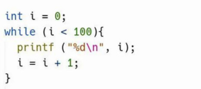
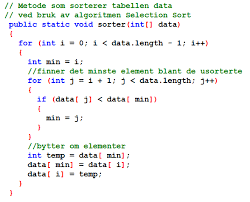

É um conjunto de regras e símbolos que permitem que um programador escreva instruções para um computador executar determinadas tarefas. Existem muitas linguagens de programação diferentes, cada uma com sua própria sintaxe e semântica.
 Em programação, um loop é uma estrutura de controle que repete um bloco de código várias vezes até que uma condição especificada seja atendida. Existem diferentes tipos de loops, incluindo o loop while, que continua repetindo enquanto uma condição é verdadeira, e o loop for, que executa um número fixo de iterações. Os loops são úteis para automatizar tarefas repetitivas e processar grandes quantidades de dados.